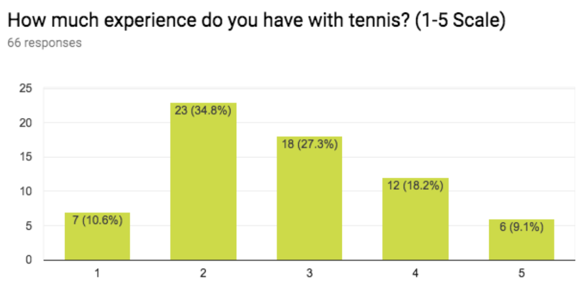
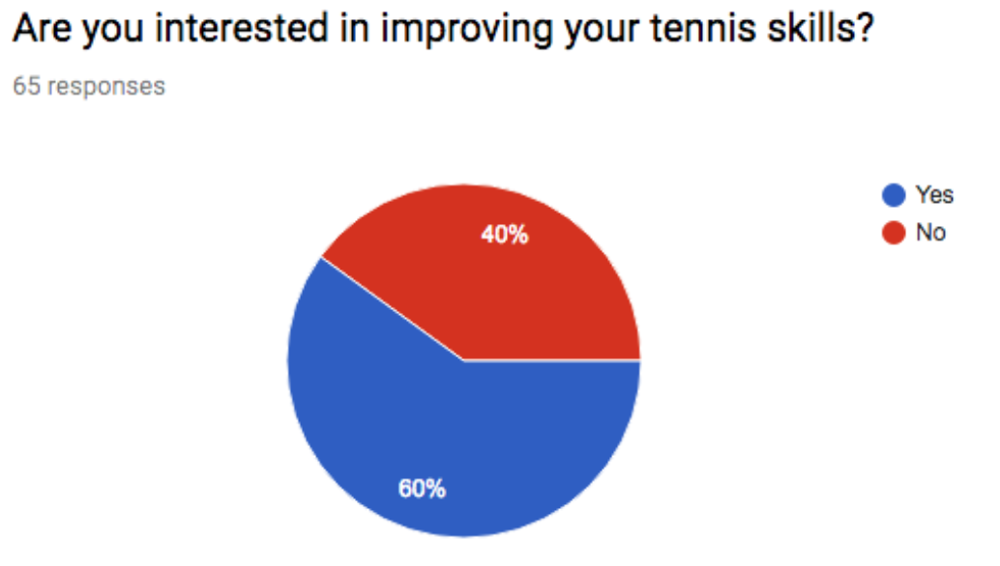

This is my senior design capstone project. The goal is to create a
cross-platform mobile app game to help tennis players improve their skills.
The app supplements practice on a real court by teaching players how to make specific
shots. As the UI/UX design lead on our team, I created a high fidelity wireframe prototype so that we
can better visualize the interactions between the user and the app, and use it to conduct a heuristic evaluation.
The application is developed with React Native and Node.js and will be available on both Android and iOS.
The app was a project requested by our client, Eddie Luby, a tennis coach from Macon, Georgia.
Eddie wanted to create an app for tennis players so that they can play and practice
anywhere or anytime they choose. He wanted the app to supplement traditional tennis coaching:
whenever a player can’t play due to weather conditions, injury, or expense, the app would
provide a way to improve one’s skills.
Objectives
Merge entertainment with learning
Randomly generate shots and target
Have outcome of shots be determined by user interaction
Adapt learnability to users of all skill levels
User Research
Target users: young adults
66 survey responses gathered from Georgia Tech students
50% are physically active at least 1-3 times per week
83.3% rarely play tennis
Average experience with tennis (1-5 scale): 2.8
60% interested in improving tennis skills


Research indicated that potential users are interested in new ways to improve their tennis game while off the court.
While we can’t help improve the more physical aspects like muscle memory, that isn’t the only thing that makes a player skilled.
We decided to build an educational game that helps a player improve and practice their tennis strategy, helping them answer questions like:
"When I receive a shot from my opponent, where should I return it?" and "Where do I move to set myself up for the following shot?"
User Stories
After reviewing the feedback from our client and our user research, we created a list of high level user stories
and acceptance criteria. Click the link below to see some of what we wrote.
We decided to approach
the inital prototype of our app with two game modes in mind- a "training mode" and a "game mode."
In "training mode," the user can practice with randomly generated shots and targets on the tennis
court. In "game mode," the user plays a set of tennis against the computer so that they can implement
the shots they practiced from "training mode" in a real game.
Final Demo
(Apologies for the cracked phone screen & lighting)